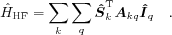

Hyperfine interaction Hamiltonian.
F = hfine(System) F = hfine(System,Spins)
hfine constructs the hyperfine interaction part of the spin
Hamiltonian of spin system System, that is

The operator matrix F is in units of MHz. If Spins is
specified, it is used as an index into System for selecting
spins. Spins = 1 is the first electron, follow by the other electrons,
if present, and the nuclei. E.g. for a system with 3 electrons and 2 nuclei,
[2 4 5] indicates the hyperfine interactions of the electron 2 with both nuclei.
For a two-spin system AB
AB = struct('S',1/2,'Nucs','23Na','g',[2 2 2],'A',[230 210 200]);
AB.Apa = [23 45 67]*pi/180;
with a hyperfine coupling matrix tilted with respect to the standard molecular frame, the eigenvalues of the hyperfine Hamiltonian are
E = eig(hfine(AB))
E = -270.1785 -267.8967 -262.5431 146.7712 150.1785 157.8967 172.5431 173.2288
Obviously the slight anisotropy in A causes the states of the combined spin S+I to split in zero field.
eeint, nquad, sham, zeeman, zfield